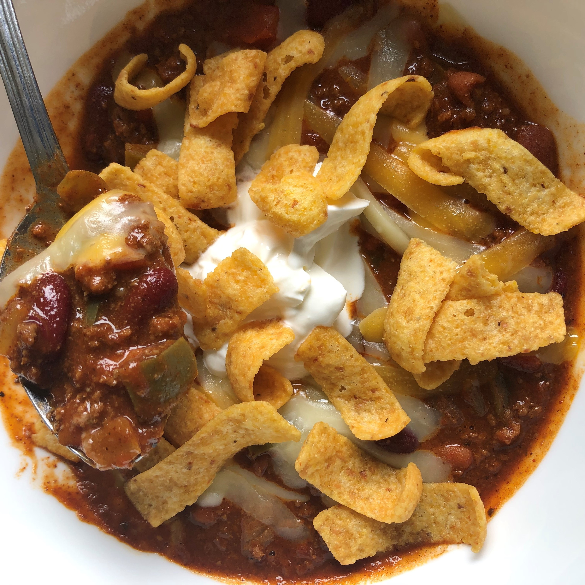

MOM'S CHILI

Chili Ingredients
INGREDIENTS
- 1-2 Tbsp olive oil
- 1 white onion, chopped
- 1 green bell pepper, chopped
- 1-2 jalapeños, chopped (adjust or omit depending on spice preference)
- 2 cloves garlic, minced
- 1-1 1/2 lbs ground beef (adjust amount based on meat preferences)
- 1 Tbsp chili powder
- 1 tsp ground cumin
- 1 tsp oregano
- 1/2 tsp onion powder
- 1/4 tsp garlic powder
- 1/4 tsp cayenne pepper
- 1 tsp salt
- 1/4 tsp freshly ground pepper
- 1 tsp cocoa powder
- 2 Tbsp brown sugar
- 1 (28 oz) can diced tomatoes
- 1 (14.5 oz) can pinto beans
- 1 (14.5 oz) can kidney beans
DIRECTIONS
- Heat a large pot over medium heat and add olive oil. Add the onion and bell pepper. Cook until beginning to soften. Add the garlic and cook for approximately 30 seconds, or until fragrant.
- Add the ground beef and cook until browned.
- Add the remaining ingredients, and stir until well combined.
- Bring the chili to a low boil. Then reduce the heat to medium-low to allow for the chili to simmer uncovered for approximately 2 hours.
- Adjust seasonings to taste and then serve with your favorite toppings!